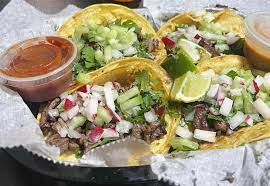

Tacos recipe!

Tacos are a close second to pizza, it is most likely the most picked option for dinner in our home. Tacos are great as leftovers as well.
Ingredients
- 1 pound cod fillets, cut into 2 to 3 ounce portions
- 2 tablespoons all-purpose flour, or more as needed
- 1 (12 ounce) package corn tortillas
- ½ medium head cabbage, finely shredded
Steps
- Step 1 Make beer batter: Combine flour, cornstarch, baking powder, and salt in a large bowl. Blend beer and egg in a separate bowl, then quickly stir into flour mixture until combined with a few lumps remaining.
- Step 2 Make white sauce: Mix together yogurt and mayonnaise in a medium bowl. Gradually stir in fresh lime juice until consistency is slightly runny. Season with jalapeño, capers, cayenne, oregano, cumin, and dill.
- Step 3 Start fish tacos: Heat oil in a deep-fryer to 375 degrees F (190 degrees C).
- Step 4 Dust fish pieces lightly with flour. Dip into beer batter, then fry in hot oil until crisp and golden brown. Drain on paper towels.
- Step 5 Lightly fry tortillas in hot oil until just crisped, but not too crisp. Drain on paper towels.
- Step 6 Place fried fish in tortillas; top with shredded cabbage and white sauce.
Tacos from heaven